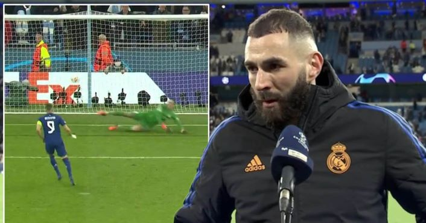

Welcome To Solomon Cudjoe's Website


Over 50? If You've Had Covid-19,
Your Risk of Getting Shingles May Be Higher

COVID-19 has been linked with a slew of unusual side effects, like COVID toes and loss of taste and smell, but new research has found having the virus can also increase your risk of developing another illness: shingles. That’s the main takeaway from a new study published in the journal Open Forum Infectious Diseases. For the study, researchers analyzed data from nearly 2 million people ages 50 and up and compared the rate of shingles (aka herpes zoster) in people who had COVID-19 to those who never had the virus. A new study has found that COVID-19 raises the risk of developing shingles. Infectious disease experts break down why this may be the case. © fotograzia - Getty Images A new study has found that COVID-19 raises the risk of developing shingles. Infectious disease experts break down why this may be the case. The researchers found that people who had COVID-19 had a 15% higher risk of shingles than those who didn’t have the virus. The risk was even higher—21%—in people who had been hospitalized with COVID-19. This, the researchers concluded, highlights “the relevance of maintaining herpes zoster vaccination.” It seems weird that you might get shingles after having COVID, but experts say it’s not shocking. Here’s what you need to know about the link. What is shingles, again? Shingles is a condition caused by the varicella zoster virus, the same virus that causes chickenpox, according to the Centers for Disease Control and Prevention (CDC). After you recover from the chickenpox, the virus stays inactive in your body. However, it can reactivate years later, causing shingles. Shingles causes a painful rash that develops on one side of the face or body. It can cause pain, itching, or tingling in the area, along with fever, headache, chills, and an upset stomach. “It can be very painful when you have shingles and can be problematic in some people afterwards as well,” says Thomas Russo, M.D., professor and chief of infectious disease at the University at Buffalo in New York. Shingles can even cause something known as post-herpetic neuralgia , he says, which is essentially lingering pain from the virus.
UN rights offices cites growing evidence
of war crimes in Ukraine

ZURICH (Reuters) - The United Nations human rights office sounded the alarm on Friday about growing evidence of war crimes in Ukraine, urging both Moscow and Kyiv to order combatants to respect international law."Russian armed forces have indiscriminately shelled and bombed populated areas, killing civilians and wrecking hospitals, schools and other civilian infrastructure, actions that may amount to war crimes," the office of U.N. High Commissioner for Human Rights (OHCHR) Michelle Bachelet said. U.N. human rights monitors in Ukraine have also documented what appeared to be the use of weapons with indiscriminate effects, causing civilian casualties, by Ukrainian armed forces in the east of the country, OHCHR said in a statement. Russia, which describes its incursion as a "special military operation" to disarm and "denazify" Ukraine, denies targeting civilians or committing any such war crimes. The OHCHR said that from the start of the war on Feb. 24 until April 20, monitors in Ukraine had verified 5,264 civilian casualties - 2,345 killed and 2,919 injured. Of these, 92.3% were recorded in government-controlled territory. Some 7.7% of casualties were recorded in the Donetsk and Luhansk regions controlled by Russian armed forces and affiliated armed groups, it added. "We know the actual numbers are going to be much higher as the horrors inflicted in areas of intense fighting, such as Mariupol, come to light, Bachelet said. "The scale of summary executions of civilians in areas previously occupied by Russian forces are also emerging. The preservation of evidence and decent treatment of mortal remains must be ensured, as well as psychological and other relief for victims and their relatives," she added. During a mission to Bucha on April 9, U.N. human rights officers documented the unlawful killing, including by summary execution, of around 50 civilians, it said. They have received more than 300 allegations of killings of civilians in the regions of Kyiv, Chernihiv, Kharkiv and Sumy, all under the control of Russian armed forces in late February and early March, it added.
45% of deferred KNUST students made payments
after directive-URO

Three days after the directive by management of the Kwame Nkrumah University of Science and Technology (KNUST) that over 6,000 students would have to defer their programmes of study for non-payment of fees, about 45 per cent of the students have made full payments. The University authorities say 22 percent of these students are local or Ghanaians while 23 per cent are foreign or international and they made personal payments. The University Relations Officer (URO), Dr. Daniel Norris Bekoe, made this revelation in an interview on 3FM’s Sunrise hosted by Alfred Ocansey on Friday, April 22. “As of [Thursday], about 22 percent of the affected students managed to pay. On international students, we had 23 percent who also managed to pay so what we were saying that the monies were with them but they refused to pay, was true.” Dr. Bekoe added: “We have said those who are indeed in need should go through a channel at the University and state why you are in need and the school will attend to them. “If a whole three months of a four-month semester and you failed to make payment of fees, not the whole payment, a percentage; then it means you are not prepared to be a student.” The URO explained that “as of yesterday, we had these numbers [45%]…some of them ran to the banks and the cash offices to pay and we know some of them are in need and we will support them”. Appeal to parents Dr. Bekoe appealed to parents to be interested in their students in schools instead of leaving them to do whatever they want on various campuses. “I am calling on parents to make a follow-up to the school and find out what their wards are doing. Some of them are using cars on campuses that they cannot take home and these are continuous students.” Dr. Bekoe noted that some students have iPhones but do not have laptops to study.
Manchester City Vs Real Madrid: Fantastic Karim Benzema
Keeps UEFA Champions League Semi-final Tie Alive
Manchester City won a breathless UEFA Champions League semi-final first-leg 4-3 but Real Madrid will fancy their chances of making another final. It was the coolest of penalties at the end of one of the wildest matches in Champions League history. (More Football News) With his cheekily dispatched “Panenka,” Karim Benzema might just have kept Real Madrid’s chances alive against Manchester City in the semifinals. City won a breathless first-leg match 4-3 at Etihad Stadium on Tuesday but squandered so many chances in an end-to-end, basketball-style epic that it hardly felt like a victory for the English club.“We could have killed them off,” said Phil Foden, one of City’s four scorers in a game that had pretty much everything. City built a two-goal lead three times but just couldn’t shake off Madrid, the kings of the competition — as City manager Pep Guardiola calls them. So it felt inevitable that when Aymeric Laporte gave away a penalty with 10 minutes remaining, Madrid wouldn’t waste the opportunity to return to Santiago Bernabeu for next week’s second leg with, somehow, only a one-goal deficit. Just when many inside the stadium were losing their heads, Benzema kept his, chipping the ball high and straight down the middle before wheeling away in front of Madrid’s jubilant fans with his arms outstretched. “The most important thing is we never lay down our arms,” Benzema said. “We are all in this until the end.” With the France striker in its team, Madrid will never lose hope. His double here — after back-to-back hat tricks earlier in the knockout stage — took his total in the Champions League this season to a competition-high 14 goals. Benzema now has 41 goals in all competitions in the most prolific season of his career. Without him, Madrid probably would not be still in with a chance of a record-extending 14th European Cup title. “Madrid is just Madrid,” Guardiola said. “It doesn’t matter if you are one goal, two goals or three goals ahead.” Guardiola didn’t have a bad word to say about his team, though. “Exceptional” was his verdict. But he surely knows City should be out of sight and already preparing for a second straight appearance in the final and the chance to avenge last year’s loss to Chelsea. The English champions led 2-0 after 11 minutes, with Kevin De Bruyne making a late run into the box to head home Riyad Mahrez’s cross and Gabriel Jesus — retained in the team after scoring four goals against Watford in the Premier League on Saturday — producing a coolly taken finish after spinning David Alaba following De Bruyne’s cross. Madrid coach Carlo Ancelotti lost 5-0 on his previous visit to the Etihad — with Everton on the final day of last season’s Premier League — and City looked like scoring just as many, if not more. With Madrid fielding a ball-playing midfield — of Luka Modric, Toni Kroos and Federico Valverde — that lacked the bite of injured Casemiro, City cut through the visitors at will and should have been further clear before Benzema steered a volley in off the post from Ferland Mendy’s cross in the 33rd. Riyad Mahrez wasted gilt-edged chances either side of Benzema’s goal to leave Guardiola enraged on the sideline, the first in the 26th when he swung wildly when one-on-one with goalkeeper Thibaut Courtois and hit the sidenetting, and then just after the restart when he raced through again and curled against the post. It would have come as a relief to Mahrez that Foden restored City’s two-goal lead in the 53rd, heading home a cross from the overlapping Fernandinho — the 36-year-old club captain who went on at right back for the injured John Stones near the end of the first half. Back came Madrid two minutes later, with Vinicius Junior turning Fernandinho — showing his fallibility in an unfamiliar position — near the halfway line and sprinting down the left before cutting in and placing a shot beyond Ederson. Laporte chose not to close down Vinicius, instead covering the potential cross into a middle, though that wouldn’t be his biggest mistake of the night. The chances kept coming, mostly for City, before Bernardo Silva curled a rising shot inside the near post after quick-witted referee Istvan Kovacs decided to play the advantage following a foul on Oleksandr Zinchenko outside the area. Benzema had the final say, however, like he has so many times in this season’s competition, and Madrid has renewed belief of reaching a first final since 2018. “It is a defeat,” Ancelotti said, “that leaves us alive in the second leg.”
ABOUT ME
I'm Solomon Cudjoe a level 100 student of the University of Ghana.I’m in the college of Basic and Applied Science offering Information Technology popularly known as IT. I want to be a web developer and an app developer after my four years stay in this wonderful university. I will be very happy if anyone reading this can help me be one of the proficient developers in this country and the rest of the world. Please I'm a novice in web development and I'm now learning so you can help me with your ideas too. You can contact me via Whatsapp and Facebook using the links below the page.
Contact Us